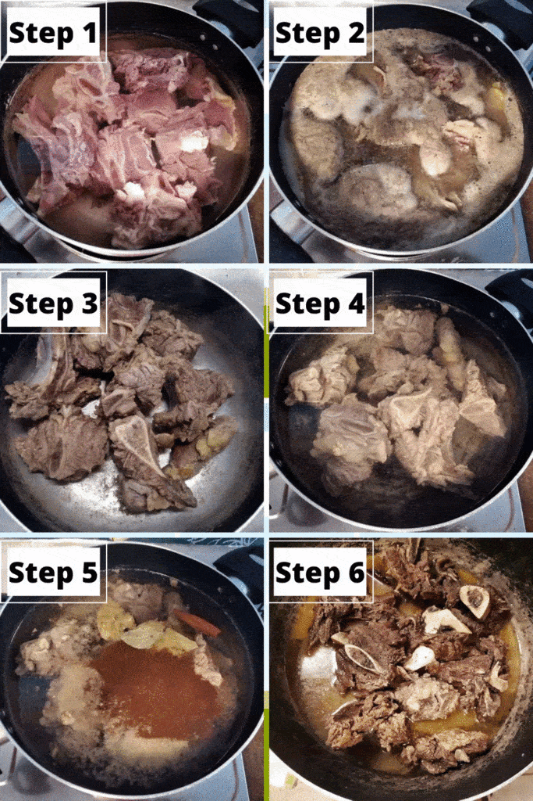

Mansaf

Today we'll learn how to make this caloric beautiful creation, enjoy.
Ingredients :
- MEAT: The meat I am using in this recipe is a mix of Lamb bone-in cuts which I let the butcher chop into smaller pieces. You can use Lamb shank, leg, or any part you like, as long you manage to have them chop into pieces.
- YOGURT: Traditionally, locals use the dry goat's milk called Jameed. However, in this recipe, I am using just plain yogurt. Some versions of Mansaf, like my recipe, prefer to use plain yogurt or Greek yogurt.
- SPICES: When you are boiling the lamb, I add a few spices to make sure the broth is flavorful. These spices include cinnamon stick, allspice, cardamom, bay leaves, peppercorn, and cloves.
- some more stuff
- Stuff 1
- Stuff 2:
- Least important stuff
Steps :
- cook
- cook more
- keep at it

- eat
You're Welcome!
Return